TEMPLES of ORISSA
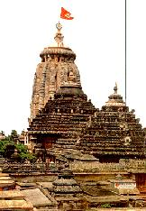
In the center of Puri lies Nilagiri, the site of the famous temple of Lord Jagannath. This temple flourished under the royal patronage of the Gajapati kings. The curious quality of decorating a temple with miniatures of itself finds full expression here. The main temple is a majestic 65 metres high structure built in the 12th centurey A.D. The temple has all the richness of the Kalinga style of architecture. Built by King Anang Bhim Dev in expiation of his guilt in slaying a Brahmin, 14 years of labour went into its construction. The elaborately decorated conical tower rises 65 meters high and has been darkened with time.
The temple itself has four chambers opening one into the other - the Hall of Offerings (bhoga mandap), pillared hall (nat mandir) for music and dance, hall of audience (jagmohan) and the fourth is the sanctum sanctorum (bada deula). In the latter, on a pedestal encrusted with gems sits Lord Jagannath with his brother Balabhadra and sister Subhadra.
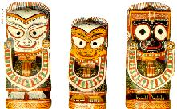
The deities are short wooden stumps with shield-like heads and without hands and feet probably propounding the belief that the Lord of the World needs neither to work his purposes among men.
The most celebrated colourful festival of Orissa is the Car festival (Ratha Yatra), the annual festival of chariots held in the beginning of the monsoons. The images of Jagannath, Subhadra and Balabhadra are brought out on huge chariots, the largest of which is about 45 feet high in which Jagannath is taken out. Thousands of devotees drag the chariot through the streets of Puri in a fervent and visually stunning ritual.
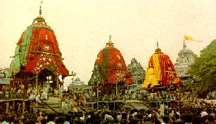
The entrance to the temple is an elegantly decorated masterpiece of art. It is also the starting point of the 22 steps that leads to the main temple.
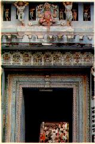
Shown below is a carved image of Ganesha (Lord of People) from the Jagannath temple.
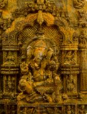
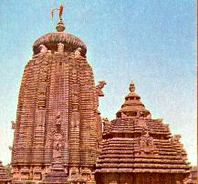
Dominating the land-scape for kilometers and soaring up to an elevation of 46 metres, the great Lingaraj temple of 11th century dedicated to Lord Shiva is a finished product of consummate skill and rare artistic genius. It represents the final stage of Kalinga style of architecture spanning over 25 centuries of progressive history. Shown below is a sculpted goddess from a panel of the temple.
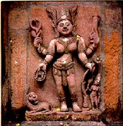
A unique view from the temple courtyards.
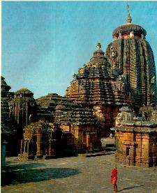
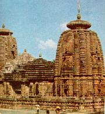
An important landmark in the architectural development of Bhubaneswar, the Mukteshwar evolved a full fledged plan which from then on appeared in all the later temples. The sculptural decoration of the Mukteshwar is exquisitely executed and it is often referred to as a "gem of Orissan architecture".
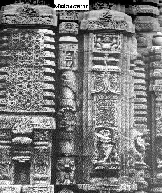
Courtesy:Priyadarshan Patra
A unique feature is the magnificient torana-decorative arch fronting the entrance (shown below).
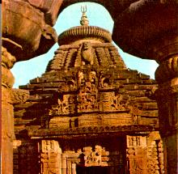
A better view of the Mukteshwar temple with the city of Bhubaneswar in the background is shown below:
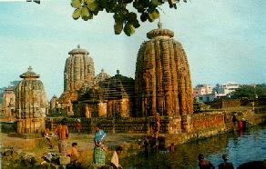
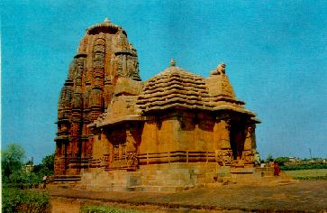
Of the temples in Bhubaneswar, the Rajarani (11th century A.D.) is the most beautiful. Though comparatively small, the fascinating aspect of this edifice is the plan of the temple which is so arranged to give a wide variety of the play of light and shade. Set in picturesque surroundings, the temple is famous for its sculptural embellishments as well as for its unusual tower and the absence of a deity. The temple stands on a platform with three elegant mouldings, with intricate floral, animal and human figures. Here the feminine form is the subject of glorious celebration and incredibly seductive figures spring to life from every niche. The slender waisted life-size figures, languorously posed, reflect the wealth of feminine charm. A few of the Sculpted Panels are shown below:
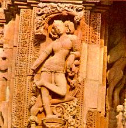
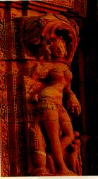
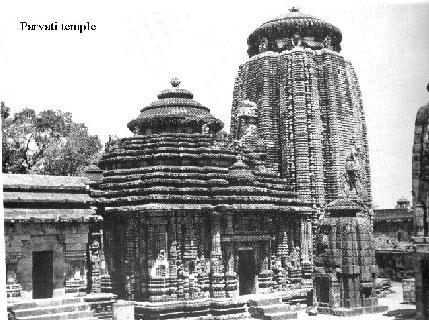
Courtesy:Priyadarshan Patra
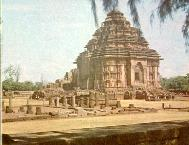
The language of stone defeats the language of the man in this towering chariot of Sun, famous throughout the world as the black Pagoda. Exquisite artistry images register pure body forms of the classical odissi dance of Orissa. Its life size images are unique in the world.
The temple would be a matter of wonder anywhere but splendidly alone amidst the sand dunes on the shores of the Bay of Bengal, the impact of this structure is astounding. Built by King Narasimha Deva in the 13th century, this magnificient edifice is dedicated to Surya, the sun god, riding through the heavens in his magnificient chariot of stone, moving through the sky on twelve pairs of gigantic wheels symbolic of the sun's cycle.
Shown below the Konark Sun Temple, floodlit at night.
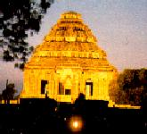
According to one colourful legend, Samba was afflicted by leprosy because of a curse by his father, Lord Krishna. After 12 years of penance, he was cured by the sun god in whose honour he built the temple. In another legend, the son of Konark's master craftsman, Dharmapada, sacrificed his life in the waters of a neighbouring river to save his father's reputation.
The entire concept of architecture is striking. The design is the celestial chariot of the sun god pulled by seven exquisitely carved ornamented horses,
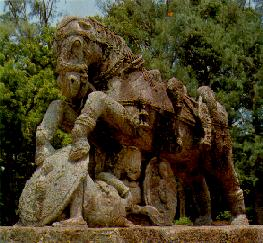
strained on twelve wheels on either side.
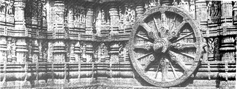
Courtesy:Priyadarshan Patra
Some of the wheels have weathered with time which can be seen in the picture below.
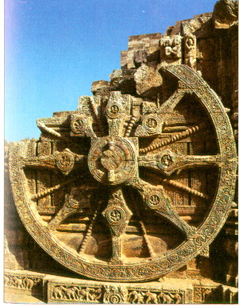
Courtesy:Priyadarshan Patra
The huge monolithic wheels represent time, unity, completeness, justice, perfection and movement and each wheel represents a fortnight and each horse a day of the week.
Although the main sanctum is in ruins, the 39 metre high audience hall, the dance hall and the ruined temple of Chhaya Devi still stand. Two horses and two monolithic elephants, also intact, exhibit the dynamism of the sculpture. A special character of the Konark temple is that the carvings cover both the inner and outer surfaces. A few of the carvings are shown below:
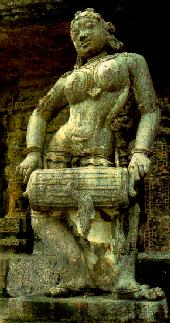
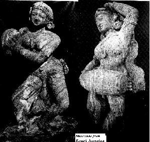
Courtesy:Priyadarshan Patra
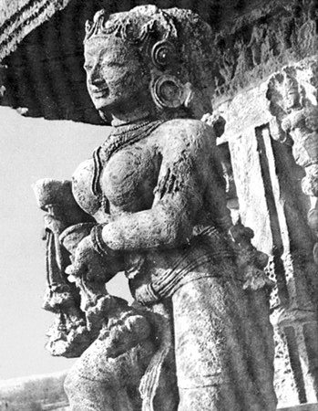
Courtesy:Priyadarshan Patra
The temple was conceived to be a total picture of the world and without mithuna or union in love which is the fount of creation, it would not have been complete. A great part of the temple is, therefore, covered with erotic art (an example is shown below).
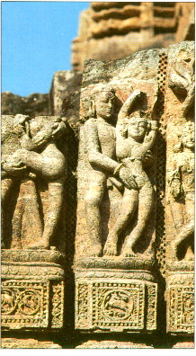
Courtesy:Priyadarshan Patra
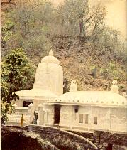
A picturesque spot on the hill. Famous for the shrine of Vidala Nrusimhanath.
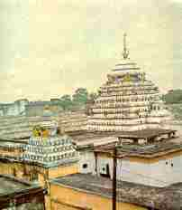
Aradi temple near Bhadrak in Baleswar district is famous for the shrine of Akhandalamani. Everyday hundreds of piligrims visit Aradi for Darsan of the Deity.
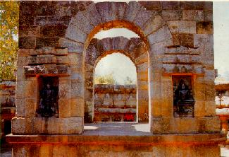
Situated in Hirapur village about 15 km from Bhubaneswar on the road to Puri, the Yogini (Female Meditator) temple is one of the five known Yogini temples in India. There are 64 Yogini images beautifully carved from black chlorite.
Your suggestions are always welcome...


| This Page Has Been Accessed | Times Since |
|---|
was last updated on :